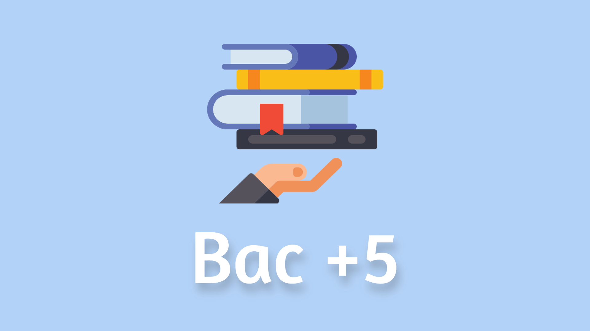

Mon projet professionnel



Objectifs pour les années à suivre :
- Finir au la main la 1ère année de B.U.T Réseaux & Télécommunications
- Le parcours Alternance en 2nd année du B.U.T
- Finir et obtenir le diplôme de B.U.T
- Intégrer une école d'ingénieurs
- Obtenir le Bac +5 spécialisé en Cybersécurité
- Intégrer l'équipe Cyber d'une grande entreprise
- évoluer dans les nombreux métiers de la Cyber.